Odo ghi lại các ca giao đồ ăn và chở khách, số km bạn chạy vì công việc và chi phí công việc. Đến mùa thuế, Odo đưa cho bạn mọi thứ kế toán hoặc myTax cần. Thiết lập chỉ mất khoảng 5 phút.
Chỉ cần làm một lần. Sau đó, Odo mở bằng một chạm, toàn màn hình, và dùng được cả khi mất sóng.
iPhone (Safari)
Chạm nút Chia sẻ ở dưới màn hình (hình vuông có mũi tên chỉ lên).
Kéo xuống và chạm Thêm vào MH chính.
Chạm Thêm ở góc trên bên phải.
Từ giờ, mở Odo bằng biểu tượng Od mới trên màn hình chính.
Android (Chrome)
Chạm menu ⋮ (ba chấm, góc trên bên phải).
Chạm Cài đặt ứng dụng hoặc Thêm vào màn hình chính.
Chạm Cài đặt hoặc Thêm.
Mở Odo bằng biểu tượng mới trên màn hình chính.
Android (Samsung Internet)
Chạm menu ≡ (ba gạch, góc dưới bên phải).
Chạm Thêm trang vào, rồi Màn hình chờ.
Chạm Thêm.
Thấy biểu tượng cài đặt nhỏ trên thanh địa chỉ? Chạm vào đó cũng được.
💡 Không tìm thấy nút? Hãy lưu Odo làm dấu trang. iPhone: Chia sẻ → Thêm dấu trang. Chrome: ⋮ → chạm ngôi sao. Samsung Internet: ≡ → Thêm trang vào → Dấu trang.
3
Tạo tài khoản miễn phí
Không có tài khoản, dữ liệu chỉ nằm trên điện thoại này. Có tài khoản, Odo sao lưu mọi thứ, và bạn đăng nhập trên điện thoại mới là lấy lại được hết.
Chạm biểu tượng người ở góc trên bên phải.
Chạm Tài khoản mới.
Nhập email và đặt mật khẩu (ít nhất 6 ký tự).
Chạm Tạo tài khoản. Nếu Odo yêu cầu, mở email từ Odo và chạm vào liên kết để xác nhận, rồi đăng nhập.
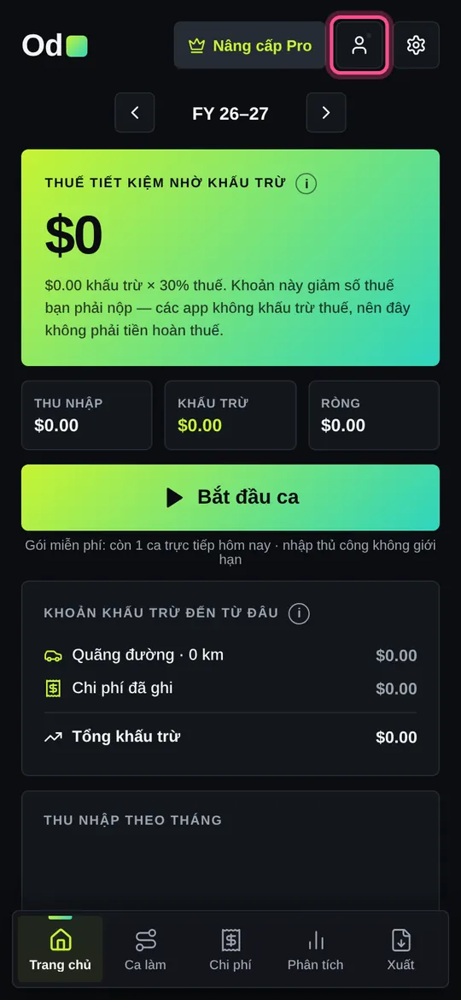
1. Chạm biểu tượng người
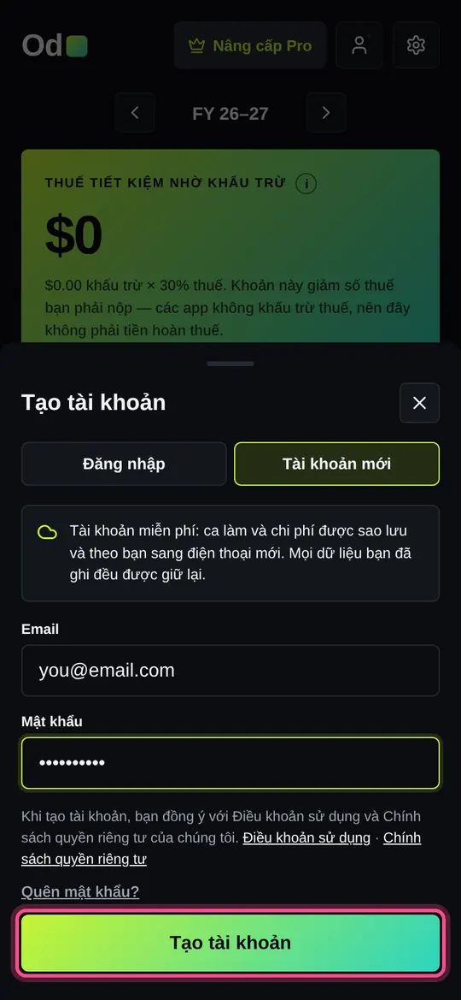
2. Tài khoản mới → Tạo tài khoản
💡 Điện thoại mới? Mở liên kết, chạm biểu tượng người, chọn Đăng nhập và dùng cùng email, mật khẩu. Dữ liệu sẽ trở lại. Chấm xanh lá trên biểu tượng người nghĩa là đã sao lưu.
4
Cho Odo biết về bạn (1 phút)
Chạm biểu tượng bánh răng ở góc trên bên phải để mở Cài đặt.
Phương tiện của bạn: chọn Ô tô, Xe máy hoặc Xe đạp.
Khu vực: giữ nguyên Úc.
Tổng thu nhập dự kiến năm nay: ước tính sơ bộ toàn bộ thu nhập, kể cả công việc khác. Odo dùng con số này để tính thuế suất.
Chạm Lưu cài đặt ở dưới cùng.
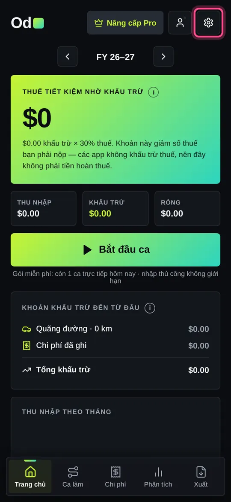
1. Chạm bánh răng
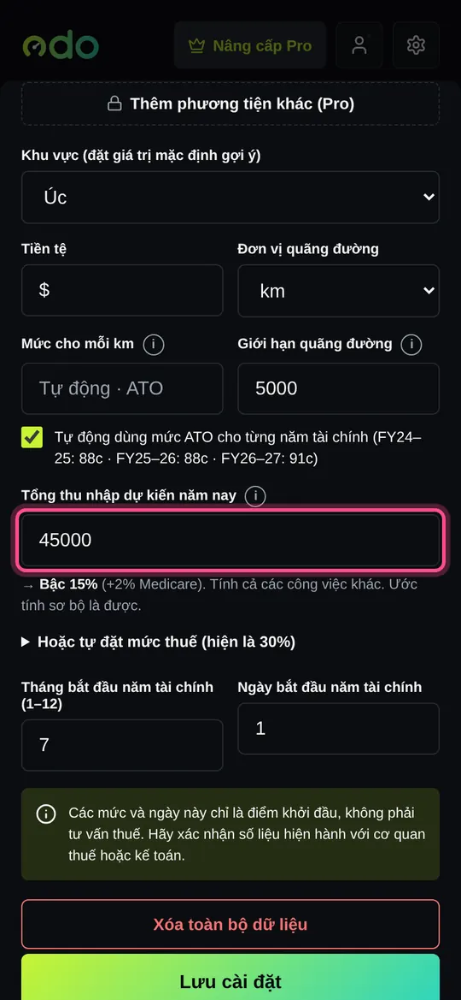
2. Nhập thu nhập dự kiến
💡 Đi xe đạp hoặc xe máy? Odo chuyển sang Chế độ xe máy/xe đạp. Mức theo km chỉ dành cho ô tô, nên khoản khấu trừ của bạn đến từ chi phí: điện thoại, sửa chữa, pin, túi và đồ nghề.
5
Ghi lại mọi ca làm
Số km thường là khoản khấu trừ lớn nhất của bạn. Mỗi ca chỉ cần hai lần chạm.
Khi bắt đầu: chạm Bắt đầu ca, chọn app (Uber, DoorDash…), nhập số đồng hồ km, chạm Bắt đầu. Bạn có thể đóng Odo; đồng hồ vẫn chạy.
Khi xong: chạm Kết thúc ca, nhập số đồng hồ km mới và số tiền kiếm được, rồi chạm Lưu ca.
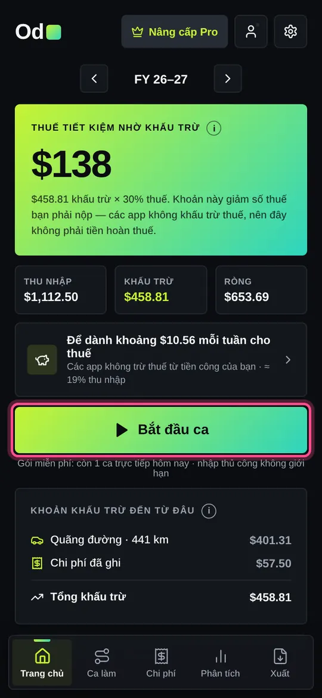
1. Chạm Bắt đầu ca
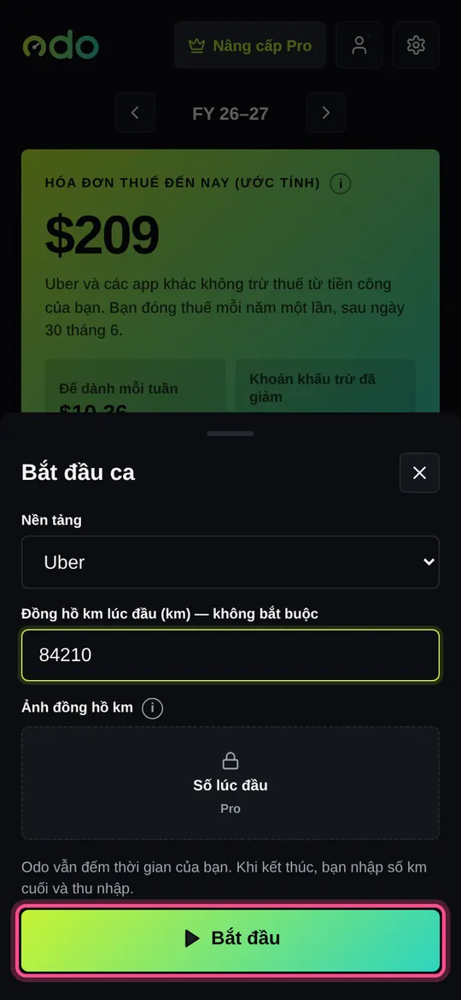
2. Đồng hồ km → Bắt đầu
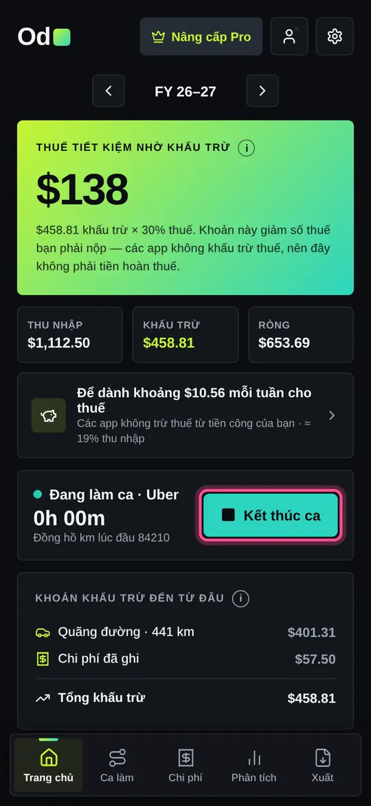
3. Xong việc: Kết thúc ca
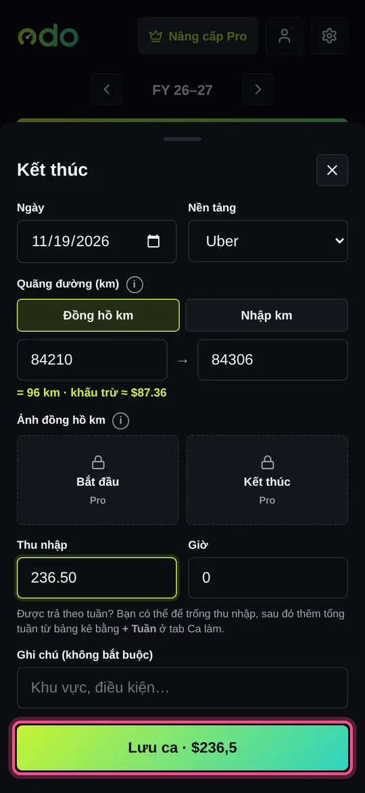
4. Số km cuối + thu nhập → Lưu
PROChụp ảnh đồng hồ km
Với Odo Pro, chạm Số lúc đầu khi bắt đầu ca để chụp đồng hồ km, và thêm ảnh Kết thúc khi xong. Mỗi ảnh được lưu cùng ca, có ngày giờ, và sao lưu vào tài khoản.
Vì sao quan trọng: ATO có thể yêu cầu bạn chứng minh cách tính số km công việc, và bạn phải giữ hồ sơ 5 năm sau khi nộp tờ khai. Ảnh chụp lúc bắt đầu và kết thúc mỗi ca là bằng chứng chắc chắn, khó bị bác bỏ. Bạn cũng không bao giờ mất hoặc ghi sai số, kể cả khi đổi điện thoại. Đến mùa thuế, Xuất → Tải ảnh gửi đại lý thuế toàn bộ ảnh trong một tệp ZIP.
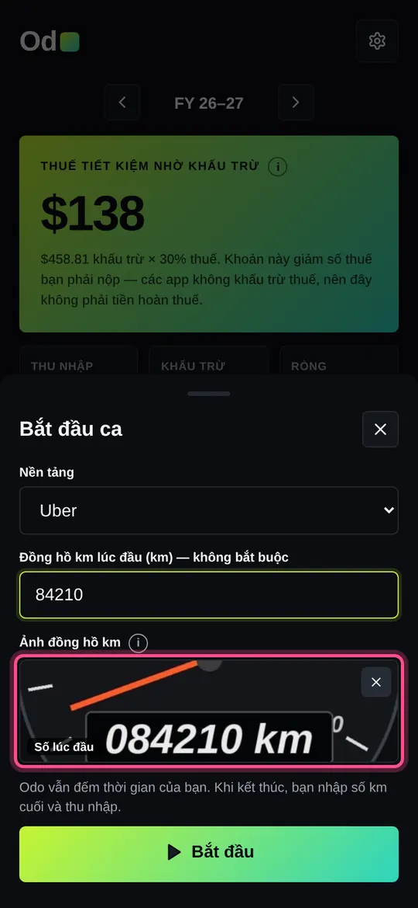
Ảnh đồng hồ km lưu cùng ca làm
💡 Quên bắt đầu ca? Tab Ca làm → + Ca để nhập sau. Được trả theo tuần? Tab Ca làm → + Tuần và chép tổng từ bảng kê tuần. Chỉ tính km công việc: quãng đường từ nhà đến đơn đầu tiên có thể không được tính.
6
Thêm chi phí công việc
Vào tab Chi phí và chạm Thêm chi phí.
Chọn danh mục (ví dụ Điện thoại & internet) và nhập số tiền.
Kéo Dùng cho công việc đến mức dùng cho công việc. Điện thoại dùng 70% để giao hàng? Đặt 70%.
Chạm Lưu.
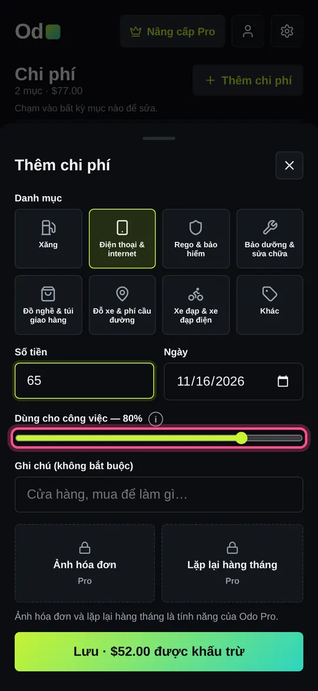
Đặt tỷ lệ dùng cho công việc
⚠️ Lái ô tô? Đừng thêm xăng, rego, bảo hiểm hay bảo dưỡng. Mức theo km của ATO (91c mỗi km năm 2026–27) đã bao gồm những khoản này. Phí đỗ xe và phí cầu đường thì thêm được.
7
Xem các con số
Thuế tiết kiệm nhờ khấu trừ
Số thuế được giảm nhờ các khoản khấu trừ công việc. Đây không phải tiền hoàn thuế: app không trừ thuế từ tiền công, nên thường bạn vẫn phải nộp một ít thuế.
Thu nhập / Khấu trừ / Ròng
Bạn kiếm được bao nhiêu, khấu trừ được bao nhiêu, và gần đúng lợi nhuận.
Để dành khoảng $… mỗi tuần
Mỗi tuần để dành chừng ấy để hóa đơn thuế tháng 7 không làm bạn bất ngờ.
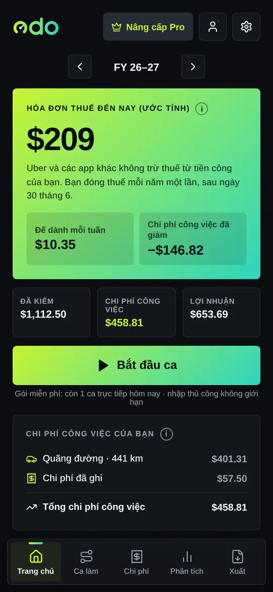
Cả năm trong một cái nhìn
💡 Chạm vào biểu tượng ⓘ bất kỳ để xem giải thích nhanh.
8
Mùa thuế: xuất dữ liệu
Sau ngày 30 tháng 6, mở tab Xuất.
Tải ca làm, chi phí và bản tóm tắt. Mở được bằng Excel hoặc Google Sheets.
Gửi cho đại lý thuế, hoặc dùng các số tổng khi khai myTax.
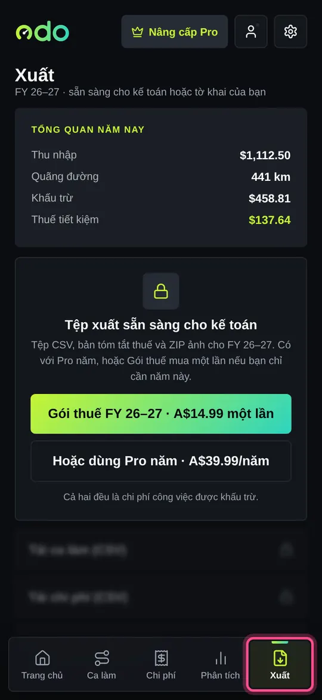
Mọi thứ kế toán cần
💡 Tính năng xuất có trong Pro hàng năm, hoặc mua Gói thuế một lần (A$14.99) cho một năm. Cả hai đều là chi phí công việc được khấu trừ.
Có thắc mắc? Cài đặt → Trợ giúp & hỗ trợ. Nếu bạn đã đăng nhập, chúng tôi trả lời ngay trong app.
Odo là công cụ ghi chép, không phải tư vấn thuế. Hãy xác nhận quy định hiện hành tại ato.gov.au hoặc với đại lý thuế có đăng ký. · Cập nhật 17 tháng 11, 2026